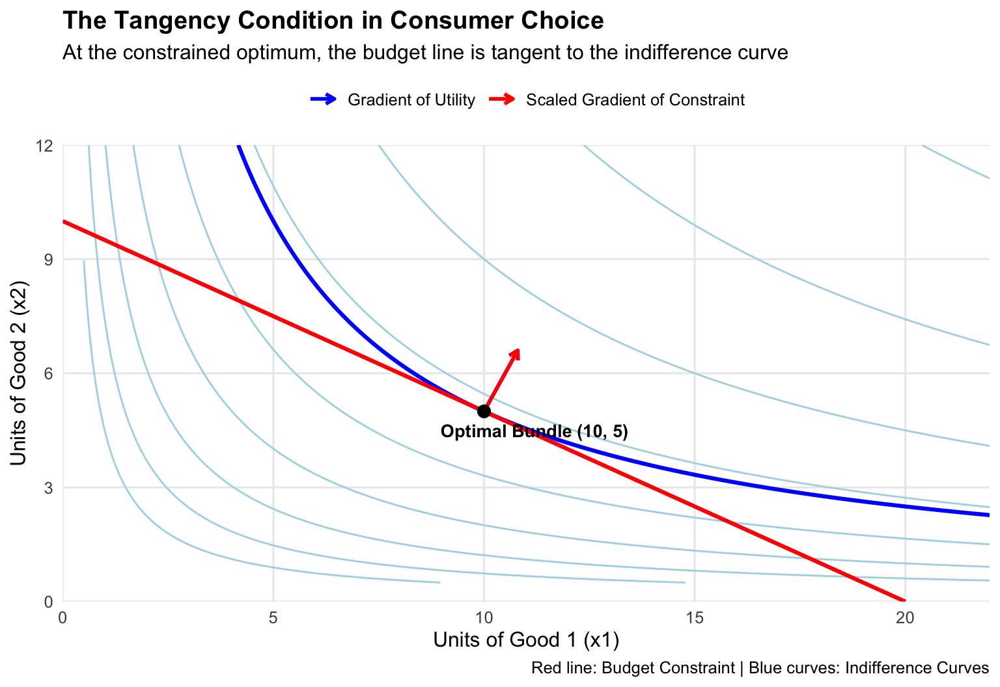

The Geometry of Scarcity: Demystifying Lagrange Multipliers
personal
data-science
Published
September 12, 2026
If you took multivariable calculus or intermediate microeconomics, you almost certainly ran into constrained optimization. Whether you were trying to maximize utility with a tight budget or minimize production costs subject to an output target, your professor probably gave you a standard recipe: take your objective function, set up an auxiliary equation with an extra variable \(\lambda\), take partial derivatives, set them to zero, and solve.
When I first learned this, it felt like an arbitrary algebraic trick. Why does introducing a phantom variable suddenly turn a difficult constrained problem into a simple unconstrained one? And what on earth is \(\lambda\) supposed to mean?
To understand what the Lagrangian is actually doing, it helps to throw away the algebra for a moment and picture a topographic map.
Imagine hiking up a hill. Your elevation at any point \((x_1, x_2)\) is determined by the mountain’s height \(f(x_1, x_2)\), and you want to reach the highest possible point. But there is a catch: you are legally required to stay on a paved walking path given by the constraint \(g(x_1, x_2) = c\).
Now, imagine walking along that path. If the path cuts across an elevation contour line at an angle, you are either going uphill or downhill. As long as the path continues to cross contour lines, you can gain elevation simply by taking another step forward.
The only point where you cannot climb any higher while staying on the path is where the path runs perfectly parallel to an elevation contour line. At that exact point, stepping either forward or backward sends you downhill. The path and the contour line touch, sharing a single tangent.
In vector calculus, the gradient vector \(\nabla f = (\frac{\partial f}{\partial x_1}, \frac{\partial f}{\partial x_2})\) points in the direction of steepest ascent, which is always perpendicular to the contour lines. Similarly, \(\nabla g\) is perpendicular to the path. Since the path and the contour line are tangent at the optimum, their perpendicular vectors must point in the exact same direction:
Here, \(\lambda\) is not magic. It is simply the scalar multiplier that stretches or shrinks one gradient vector to match the length of the other. The Lagrangian function \(\mathcal{L}\) is just an algebraic shorthand designed so its first-order conditions enforce this exact geometric tangency.
The technique was originally developed in 1788 by Joseph-Louis Lagrange in his classic treatise Mécanique Analytique. Lagrange was solving physical problems, such as particles constrained to move along rigid surfaces. More than a century later, economists—most notably Paul Samuelson in his 1947 Foundations of Economic Analysis—realized that Lagrange had handed economics its most powerful mathematical tool. Economics, after all, is defined by scarcity.
In economics, \(\lambda\) earns a name of its own: the shadow price. By the Envelope Theorem:
This tells us that \(\lambda^*\) measures the marginal increase in our maximized objective when the constraint is relaxed by one unit. In consumer choice, \(\lambda^*\) is the marginal utility of income—how many extra utils you would get from an extra dollar of budget. In a firm’s cost-minimization problem, \(\lambda^*\) is the marginal cost of producing one additional unit.
To see this tangency clearly, we can simulate a standard consumer choice problem in R: maximizing \(U(x_1, x_2) = \ln(x_1) + \ln(x_2)\) subject to \(2x_1 + 4x_2 = 40\). At the optimal bundle \((10, 5)\), the budget line is tangent to the indifference curve, and the gradient vectors point in identical directions.
library(ggplot2)library(dplyr)grid_df <-expand.grid(x1 =seq(0.5, 22, length.out =300),x2 =seq(0.5, 12, length.out =300)) %>%mutate(U =log(x1) +log(x2))opt_x1 <-10opt_x2 <-5opt_U <-log(opt_x1) +log(opt_x2)budget_df <-data.frame(x1 =seq(0, 20, length.out =100)) %>%mutate(x2 = (40-2* x1) /4)grad_df <-data.frame(x =c(opt_x1, opt_x1),y =c(opt_x2, opt_x2),xend =c(opt_x1 +0.8, opt_x1 +0.8),yend =c(opt_x2 +1.6, opt_x2 +1.6),Vector =c("Gradient of Utility", "Scaled Gradient of Constraint"))p <-ggplot() +geom_contour(data = grid_df, aes(x = x1, y = x2, z = U),breaks =seq(1.5, 5.5, by =0.5), color ="lightblue", linewidth =0.5) +geom_contour(data = grid_df, aes(x = x1, y = x2, z = U),breaks = opt_U, color ="blue", linewidth =1.1) +geom_line(data = budget_df, aes(x = x1, y = x2), color ="red", linewidth =1.1) +geom_segment(data = grad_df, aes(x = x, y = y, xend = xend, yend = yend, color = Vector),arrow =arrow(length =unit(0.2, "cm")), linewidth =1) +geom_point(aes(x = opt_x1, y = opt_x2), color ="black", size =3) +annotate("text", x = opt_x1 +1.2, y = opt_x2 -0.5, label ="Optimal Bundle (10, 5)", fontface ="bold", size =3.6) +scale_color_manual(values =c("Gradient of Utility"="blue", "Scaled Gradient of Constraint"="red")) +coord_cartesian(xlim =c(0, 22), ylim =c(0, 12), expand =FALSE) +labs(title ="The Tangency Condition in Consumer Choice",subtitle ="At the constrained optimum, the budget line is tangent to the indifference curve",x ="Units of Good 1 (x1)",y ="Units of Good 2 (x2)",color =NULL,caption ="Red line: Budget Constraint | Blue curves: Indifference Curves" ) +theme_minimal(base_size =12) +theme(legend.position ="top",plot.title =element_text(face ="bold"),panel.grid.minor =element_blank() )dir.create("figures", showWarnings =FALSE)ggsave("figures/lagrange_tangency.png", plot = p, width =7.5, height =5.5, dpi =300)print(p)

Lagrange multipliers are neither a bookkeeping gimmick nor arbitrary algebra. At its heart, the method is purely geometric: it finds the exact spot where level curves stop crossing the constraint and kiss it tangentially. In economics, this point of tangency does not just solve a math problem—it reveals the shadow price of scarcity itself.